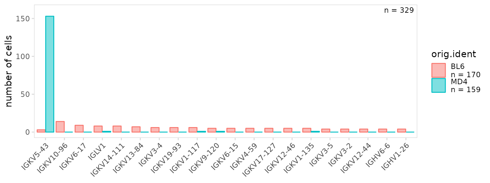
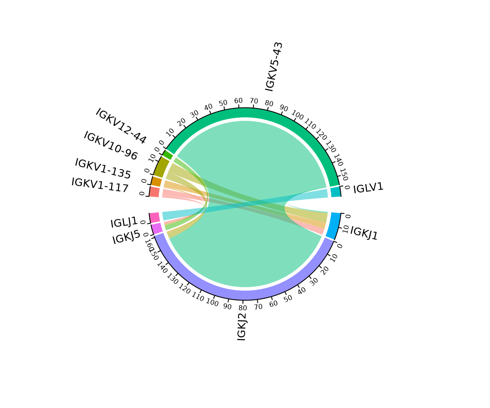
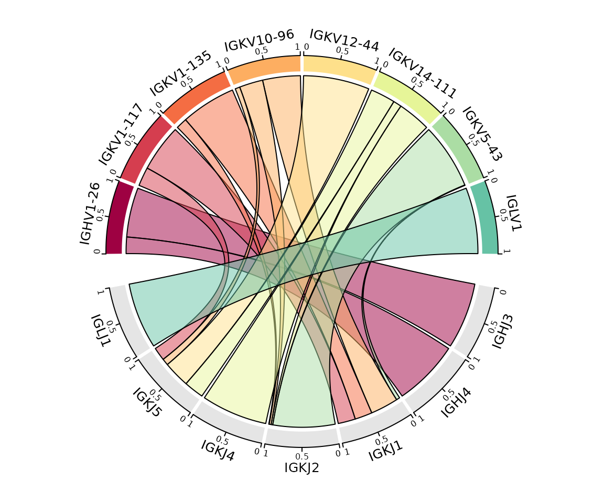
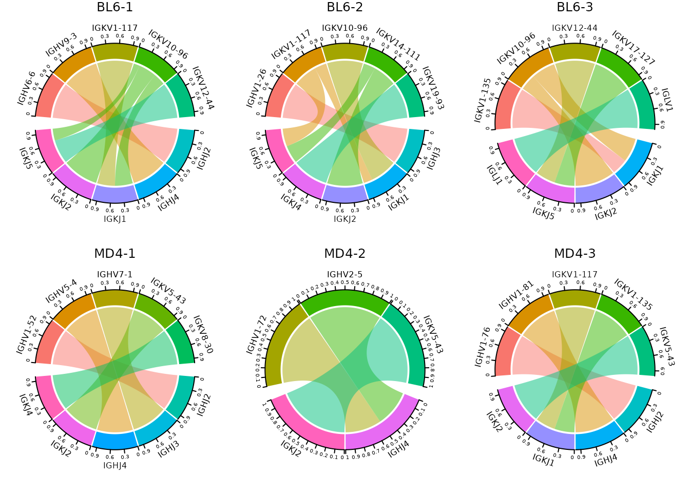

This vignette provides detailed examples for calculating and visualizing V(D)J gene usage. For the examples shown below, we use data for splenocytes from BL6 and MD4 mice collected using the 10X Genomics scRNA-seq platform. MD4 B cells are monoclonal and specifically bind hen egg lysozyme.
library(djvdj)
library(Seurat)
library(ggplot2)
library(RColorBrewer)
# Add V(D)J data to object
vdj_dirs <- c(
BL6 = system.file("extdata/splen/BL6_BCR", package = "djvdj"),
MD4 = system.file("extdata/splen/MD4_BCR", package = "djvdj")
)
so <- splen_so |>
import_vdj(vdj_dirs, define_clonotypes = "cdr3_gene")Calculating gene usage
The calc_gene_usage() function will calculate the number
of cells (‘freq’) and percentage of cells (‘pct’) with each gene in the
data_cols column(s). The ‘n_cells’ column shows the total
number of cells used for calculating percentages. By default these
results are added to the object meta.data, to return a data.frame set
return_df to TRUE.
so |>
calc_gene_usage(
data_cols = "v_gene",
return_df = TRUE
)
#> # A tibble: 103 × 4
#> v_gene n_cells freq pct
#> <chr> <int> <int> <dbl>
#> 1 IGKV5-43 329 156 47.4
#> 2 IGKV10-96 329 14 4.26
#> 3 IGKV6-17 329 9 2.74
#> 4 IGLV1 329 9 2.74
#> 5 IGKV14-111 329 8 2.43
#> 6 IGKV1-117 329 7 2.13
#> 7 IGKV13-84 329 7 2.13
#> 8 IGKV1-135 329 6 1.82
#> 9 IGKV19-93 329 6 1.82
#> 10 IGKV3-4 329 6 1.82
#> # ℹ 93 more rowsTo perform gene usage calculations separately for cell clusters (or
samples), provide the meta.data column containing cluster labels to the
cluster_col argument. Here we see that the MD4 samples
almost exclusively use a single V segment (IGKV5-43), which is expected
since MD4 B cells are monoclonal.
so |>
calc_gene_usage(
data_cols = "v_gene",
cluster_col = "sample",
return_df = TRUE
)
#> # A tibble: 618 × 6
#> v_gene sample n_cells freq pct shared
#> <chr> <chr> <dbl> <int> <dbl> <lgl>
#> 1 IGKV5-43 MD4-2 55 55 100 TRUE
#> 2 IGKV5-43 MD4-3 54 51 94.4 TRUE
#> 3 IGKV5-43 MD4-1 50 47 94 TRUE
#> 4 IGKV10-96 BL6-1 55 6 10.9 TRUE
#> 5 IGKV10-96 BL6-3 52 5 9.62 TRUE
#> 6 IGKV14-111 BL6-2 63 6 9.52 TRUE
#> 7 IGLV1 BL6-3 52 4 7.69 TRUE
#> 8 IGHV6-6 BL6-1 55 4 7.27 FALSE
#> 9 IGKV6-17 BL6-2 63 4 6.35 TRUE
#> 10 IGKV8-24 BL6-2 63 4 6.35 FALSE
#> # ℹ 608 more rowsTo only perform calculations for a specific chain, use the
chain argument. In this example we are only returning
results for the IGK chain. Here we see some values in the ‘v_gene’
column labeled as ‘None’, this shows the number of cells that did not
have a V gene segment identified.
so |>
calc_gene_usage(
data_cols = "v_gene",
cluster_col = "sample",
chain = "IGK",
return_df = TRUE
)
#> # A tibble: 336 × 6
#> v_gene sample n_cells freq pct shared
#> <chr> <chr> <dbl> <int> <dbl> <lgl>
#> 1 IGKV5-43 MD4-2 55 55 100 TRUE
#> 2 IGKV5-43 MD4-3 54 51 94.4 TRUE
#> 3 IGKV5-43 MD4-1 50 47 94 TRUE
#> 4 IGKV10-96 BL6-1 55 6 10.9 TRUE
#> 5 IGKV10-96 BL6-3 52 5 9.62 TRUE
#> 6 None BL6-3 52 5 9.62 TRUE
#> 7 IGKV14-111 BL6-2 63 6 9.52 TRUE
#> 8 IGKV6-17 BL6-2 63 4 6.35 TRUE
#> 9 IGKV8-24 BL6-2 63 4 6.35 FALSE
#> 10 IGKV3-4 BL6-3 52 3 5.77 TRUE
#> # ℹ 326 more rowsIf two columns are provided to the data_cols argument,
the number of cells containing each combination of genes is
returned.
so |>
calc_gene_usage(
data_cols = c("v_gene", "j_gene"),
cluster_col = "sample",
return_df = TRUE
)
#> # A tibble: 1,062 × 7
#> v_gene j_gene sample n_cells freq pct shared
#> <chr> <chr> <chr> <dbl> <int> <dbl> <lgl>
#> 1 IGKV5-43 IGKJ2 MD4-2 55 55 100 TRUE
#> 2 IGKV5-43 IGKJ2 MD4-3 54 51 94.4 TRUE
#> 3 IGKV5-43 IGKJ2 MD4-1 50 47 94 TRUE
#> 4 IGKV14-111 IGKJ2 BL6-2 63 4 6.35 FALSE
#> 5 IGKV10-96 IGKJ1 BL6-3 52 3 5.77 TRUE
#> 6 IGLV1 IGLJ1 BL6-3 52 3 5.77 TRUE
#> 7 IGKV10-96 IGKJ2 BL6-1 55 3 5.45 TRUE
#> 8 IGKV10-96 IGKJ1 BL6-2 63 3 4.76 TRUE
#> 9 IGKV6-15 IGKJ5 BL6-3 52 2 3.85 TRUE
#> 10 IGKV10-96 IGKJ2 BL6-3 52 2 3.85 TRUE
#> # ℹ 1,052 more rowsPlotting gene usage
The plot_gene_usage() function will summarize the
frequency of each gene segment. By default if a single column is passed
to the data_cols argument, a bargraph will be returned. The
number of top genes to include in the plot can be specified with the
genes argument.
so |>
plot_gene_usage(
data_cols = "v_gene",
cluster_col = "orig.ident",
genes = 20
)By default, percentages are shown on the y-axis, to instead plot the
frequency, set the units argument to ‘frequency’.
so |>
plot_gene_usage(
data_cols = "v_gene",
cluster_col = "orig.ident",
units = "frequency"
)
Plot colors can be adjusted using the plot_colors
argument. In addition, plot_gene_usage() returns a ggplot
object that can be modified with ggplot2 functions such as
ggplot2::theme(). Plots can be further adjusted by passing
aesthetic parameters directly to ggplot2, e.g. alpha,
linetype, color, etc.
so |>
plot_gene_usage(
data_cols = "v_gene",
cluster_col = "orig.ident",
plot_colors = c(BL6 = "#3288BD", MD4 = "#D53E4F"),
color = "black", # parameters to pass to ggplot2
alpha = 0.7
) +
theme(axis.text.x = element_text(angle = 90))
If two columns are passed to the data_cols argument, a
heatmap will be generated summarizing the usage of different pairs of
segments. If a column is provided to the cluster_col
argument, a separate heatmap will be generated for each cluster.
In this example we are plotting the frequency that different heavy chain V and J segments appear together.
so |>
plot_gene_usage(
data_cols = c("v_gene", "j_gene"),
cluster_col = "orig.ident",
chain = "IGH",
genes = 15
)The paired gene usage for two chains can also be plotted using
plot_gene_pairs(). In this example we are plotting the
frequency that different heavy and light chain V segments appear
together.
so |>
plot_gene_pairs(
data_col = "v_gene",
chains = c("IGH", "IGK"),
cluster_col = "orig.ident",
genes = 12
)Circos plot
A circos plot can be created by setting the method
argument to ‘circos’. This plot will summarize the number of cells
containing different gene pairs, which is shown as the axis labels for
each sample. This requires the circlize package to be installed.
In this example, we are summarizing the segment usage for the entire
dataset (BL6 and MD4 cells combined). The cluster_col
argument can be used to create a separate plot for each sample. Labels
can be rotated to eliminate overlapping text using the
rotate_labels argument.
so |>
plot_gene_usage(
data_cols = c("v_gene", "j_gene"),
method = "circos",
genes = 6,
rotate_labels = TRUE
)
Plot colors can be modified using the plot_colors
argument, additional parameters can be passed directly to
circlize::chordDiagram(). In this example we add a border
around the links and scale the plot so each sample is the same
width.
so |>
plot_gene_usage(
data_cols = c("v_gene", "j_gene"),
method = "circos",
genes = 8,
plot_colors = brewer.pal(10, "Spectral"),
link.border = "black", # parameters to pass to chordDiagram()
scale = TRUE
)
Gene segment usage can be plotted separately for cell clusters (or
samples) using the cluster_col argument. The number of rows
used to arrange plots can be modified using the panel_nrow
argument.
so |>
plot_gene_usage(
data_cols = c("v_gene", "j_gene"),
method = "circos",
cluster_col = "sample",
genes = 5,
panel_nrow = 2,
scale = TRUE
)
Session info
#> R version 4.3.1 (2023-06-16)
#> Platform: x86_64-pc-linux-gnu (64-bit)
#> Running under: Ubuntu 22.04.3 LTS
#>
#> Matrix products: default
#> BLAS: /usr/lib/x86_64-linux-gnu/openblas-pthread/libblas.so.3
#> LAPACK: /usr/lib/x86_64-linux-gnu/openblas-pthread/libopenblasp-r0.3.20.so; LAPACK version 3.10.0
#>
#> locale:
#> [1] LC_CTYPE=C.UTF-8 LC_NUMERIC=C LC_TIME=C.UTF-8
#> [4] LC_COLLATE=C.UTF-8 LC_MONETARY=C.UTF-8 LC_MESSAGES=C.UTF-8
#> [7] LC_PAPER=C.UTF-8 LC_NAME=C LC_ADDRESS=C
#> [10] LC_TELEPHONE=C LC_MEASUREMENT=C.UTF-8 LC_IDENTIFICATION=C
#>
#> time zone: UTC
#> tzcode source: system (glibc)
#>
#> attached base packages:
#> [1] stats graphics grDevices utils datasets methods base
#>
#> other attached packages:
#> [1] RColorBrewer_1.1-3 ggplot2_3.4.3 SeuratObject_4.1.3
#> [4] Seurat_4.3.0.1 djvdj_0.1.0
#>
#> loaded via a namespace (and not attached):
#> [1] RcppAnnoy_0.0.21 splines_4.3.1
#> [3] later_1.3.1 bitops_1.0-7
#> [5] tibble_3.2.1 polyclip_1.10-4
#> [7] lifecycle_1.0.3 doParallel_1.0.17
#> [9] rprojroot_2.0.3 globals_0.16.2
#> [11] lattice_0.21-8 vroom_1.6.3
#> [13] MASS_7.3-60 backports_1.4.1
#> [15] magrittr_2.0.3 plotly_4.10.2
#> [17] sass_0.4.7 rmarkdown_2.24
#> [19] jquerylib_0.1.4 yaml_2.3.7
#> [21] httpuv_1.6.11 sctransform_0.3.5
#> [23] sp_2.0-0 spatstat.sparse_3.0-2
#> [25] reticulate_1.31 cowplot_1.1.1
#> [27] pbapply_1.7-2 abind_1.4-5
#> [29] zlibbioc_1.46.0 Rtsne_0.16
#> [31] GenomicRanges_1.52.0 purrr_1.0.2
#> [33] BiocGenerics_0.46.0 RCurl_1.98-1.12
#> [35] circlize_0.4.15 GenomeInfoDbData_1.2.10
#> [37] IRanges_2.34.1 S4Vectors_0.38.1
#> [39] ggrepel_0.9.3 irlba_2.3.5.1
#> [41] listenv_0.9.0 spatstat.utils_3.0-3
#> [43] goftest_1.2-3 spatstat.random_3.1-5
#> [45] fitdistrplus_1.1-11 parallelly_1.36.0
#> [47] pkgdown_2.0.7 leiden_0.4.3
#> [49] codetools_0.2-19 DelayedArray_0.26.7
#> [51] tidyselect_1.2.0 shape_1.4.6
#> [53] farver_2.1.1 matrixStats_1.0.0
#> [55] stats4_4.3.1 spatstat.explore_3.2-1
#> [57] jsonlite_1.8.7 GetoptLong_1.0.5
#> [59] ellipsis_0.3.2 ggtrace_0.2.0
#> [61] progressr_0.14.0 ggridges_0.5.4
#> [63] survival_3.5-5 iterators_1.0.14
#> [65] systemfonts_1.0.4 foreach_1.5.2
#> [67] tools_4.3.1 ragg_1.2.5
#> [69] ica_1.0-3 Rcpp_1.0.11
#> [71] glue_1.6.2 gridExtra_2.3
#> [73] xfun_0.40 MatrixGenerics_1.12.3
#> [75] GenomeInfoDb_1.36.2 dplyr_1.1.2
#> [77] withr_2.5.0 fastmap_1.1.1
#> [79] boot_1.3-28.1 fansi_1.0.4
#> [81] digest_0.6.33 R6_2.5.1
#> [83] mime_0.12 textshaping_0.3.6
#> [85] colorspace_2.1-0 scattermore_1.2
#> [87] tensor_1.5 spatstat.data_3.0-1
#> [89] utf8_1.2.3 tidyr_1.3.0
#> [91] generics_0.1.3 data.table_1.14.8
#> [93] httr_1.4.7 htmlwidgets_1.6.2
#> [95] S4Arrays_1.0.5 uwot_0.1.16
#> [97] pkgconfig_2.0.3 gtable_0.3.4
#> [99] ComplexHeatmap_2.16.0 lmtest_0.9-40
#> [101] SingleCellExperiment_1.22.0 XVector_0.40.0
#> [103] htmltools_0.5.6 clue_0.3-64
#> [105] scales_1.2.1 Biobase_2.60.0
#> [107] png_0.1-8 knitr_1.43
#> [109] tzdb_0.4.0 reshape2_1.4.4
#> [111] rjson_0.2.21 nlme_3.1-162
#> [113] cachem_1.0.8 zoo_1.8-12
#> [115] GlobalOptions_0.1.2 stringr_1.5.0
#> [117] KernSmooth_2.23-21 parallel_4.3.1
#> [119] miniUI_0.1.1.1 desc_1.4.2
#> [121] pillar_1.9.0 grid_4.3.1
#> [123] vctrs_0.6.3 RANN_2.6.1
#> [125] promises_1.2.1 xtable_1.8-4
#> [127] cluster_2.1.4 evaluate_0.21
#> [129] readr_2.1.4 cli_3.6.1
#> [131] compiler_4.3.1 rlang_1.1.1
#> [133] crayon_1.5.2 abdiv_0.2.0
#> [135] future.apply_1.11.0 labeling_0.4.2
#> [137] plyr_1.8.8 fs_1.6.3
#> [139] stringi_1.7.12 viridisLite_0.4.2
#> [141] deldir_1.0-9 munsell_0.5.0
#> [143] lazyeval_0.2.2 spatstat.geom_3.2-4
#> [145] Matrix_1.5-4.1 hms_1.1.3
#> [147] patchwork_1.1.3 bit64_4.0.5
#> [149] future_1.33.0 shiny_1.7.5
#> [151] highr_0.10 SummarizedExperiment_1.30.2
#> [153] ROCR_1.0-11 igraph_1.5.1
#> [155] broom_1.0.5 memoise_2.0.1
#> [157] bslib_0.5.1 bit_4.0.5